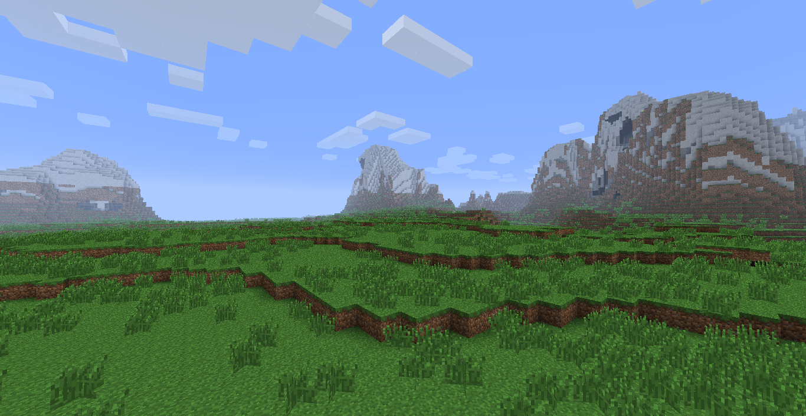

Welcome!
Welcome to the MCCP Project Recruiment page! We're currently looking for voluntary builders to assist in the creation and maintentence of the project. The whole idea of the project is to host a Minecraft Server based around the core concept of Social MMO games such as Club Penguin while mixing in the classic Arcade format of today's Minecraft networks like Mineplex, Hypixel, The Hive, etc. In order to achieve a perfect representation of our vision, we need a Massive map to be created with plently of detail. On top of that, we need High-Quality Arcade maps to ensure the Arcade games look great. Maps for games such as Murder!, Spleef, Balloon Wars, and many more unique games!
